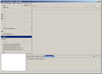
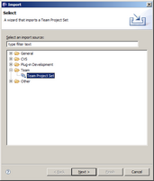
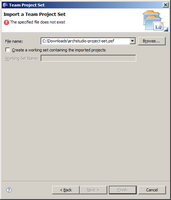
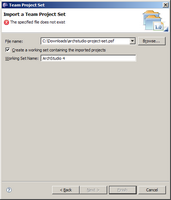

This document describes how to check out the ArchStudio 4 (and constituent) code from the ISR Subversion repository and build ArchStudio from source.
Casual ArchStudio users or those evaluating the technology should probably just download and install the latest pre-built release. However, ArchStudio developers - those who are interested in developing new ArchStudio components, making changes to ArchStudio itself, or those interested in having bleeding-edge updates to ArchStudio before they go into official release - should check out the ArchStudio source code and build the environment from source.
ArchStudio and related projects are stored and managed in a Subversion repository. Subversion is an open-source configuration management system that is a superior replacement for the popular but aging CVS system. Subversion is increasingly supported by tools on many popular platforms that make it easy to work with and contribute to our source code in your favorite development environment.
ArchStudio is built in and for the Eclipse development environment. Although you can check out ArchStudio source code without using Eclipse, we recommend doing it in Eclipse so you can actually build the source.
If you are just interested in browsing the source without checking it out, you can browse the raw source archive.
You will need the following installed on your machine:
At the current time, ArchStudio is developed on Java 2 Standard Edition, version 5.0 (J2SE 5.0). You can download the runtime environment or development toolkit from:
http://java.sun.com/javase/downloads/index.jsp
You will also need to download Eclipse 4.2 or better, and install it on your machine. Downloads and installation instructions are available at http://www.eclipse.org/. If you already have Eclipse, you can also download and extract a second copy in a separate directory solely for ArchStudio if you so desire.
You will also need to install ArchStudio itself in order to build ArchStudio. Follow the instructions to install ArchStudio and install it into your Eclipse environment.
A Subversion client is required to check out the source code. Multiple Subversion clients can be installed concurrently and (in general) used interchangeably.
After you have downloaded Eclipse, we strongly recommend that you download and install the Subclipse plugin from:
Subclipse will allow you to check out the ArchStudio source code directly into your Eclipse workspace as a set of projects.
You can also download additional Subversion clients for your machine, but only one (preferably Subclipse) is required to check out and build ArchStudio.
The primary non-Eclipse Subversion client is a command-line client, available as a binary download for a large number of platforms from:
http://subversion.tigris.org/project_packages.html
GUI clients provide Subversion client functionality with a friendlier interface. Some GUI clients require the Subversion command-line client to be installed while others do not. You can obtain some GUI clients from:
TortoiseSVN: http://tortoisesvn.tigris.org/
RapidSVN: http://rapidsvn.tigris.org/
Instructions as to how to check out ArchStudio and related projects with these various clients are provided below.
All ISR projects use the de-facto standard trunk/tags/branches Subversion repository configuration described here. Our repository is located at:
http://svn.ics.uci.edu/isr-projects/for read-only access, and
http://svn.ics.uci.edu/isr/projects/for commit access
Current development is committed to individual project trunks.
Once you have the tools above installed and running, you can check out the ArchStudio source code. ArchStudio is composed of a number of different sub-projects, each of which contributes a part to the environment.
Enumerating and checking out the projects one-by-one would be somewhat difficult, and the set of projects does change from time to time. To ease the process, we have created Eclipse team project set files for ArchStudio 4. This lets you checkout all ArchStudio 4-related projects into your workspace at once. Note that you must have Subclipse installed for this to work.
First, download one or both of our Team Project Set files (only the first is required; the other contains feature and update-site projects that are used to create deployment builds of ArchStudio). Save to some directory, such as your desktop.
The remaining steps are shown here, annotated with screenshots:
|  | From Eclipse, select File > Import. |
|  | This brings up the File Import dialog. Select 'Team Project Set' from the 'Team' folder. |
|  | Select the team project set file you downloaded. |
|  | Optionally, assign an Eclipse Working Set name to the set, such as 'ArchStudio 4,' to help group the projects in your Eclipse workspace. |
Once this is done, click 'Finish' and Eclipse will check out all the ArchStudio-related projects from the Subversion repository. It should build them automatically.
Once the build is done in Eclipse, you can run the built version of
ArchStudio by launching it as an Eclipse application. This will start
a second copy of Eclipse, which will include the ArchStudio plugins.
We have also included an Eclipse launch script in the ArchStudio
directory, under res/eclipse.
Some people have reported some errors/problems in the Package Explorer when setting up the archstudio4 project. Often this is because not all the dependent Packages are in the Workspace. Sometimes the problem persists even though all packages are in place.
Occasionally, Package Explorer shows errors to archstudio4, even though all the supporting packages are in the Workspace. One of the most common reasons that the project is marked with errors is due to the a mismatch in what the project needs from Java and what Eclipse is providing to the project. Often this occurs because:
Solution 1: Verify/Adjust Java Compile Settings
Solution 2: Rebuild the Classpath for the Project
Comments or questions on this page should go to Eric M. Dashofy.
{kind=link}
{kind=link}
{kind=link}
{kind=link}